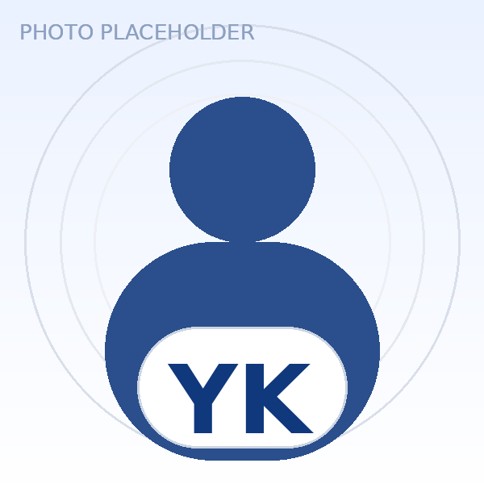
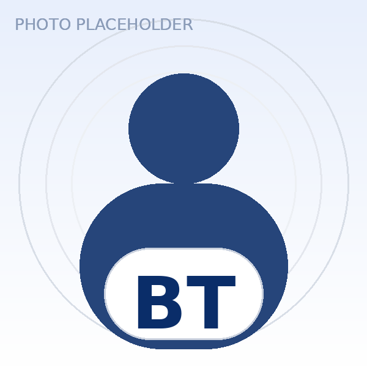
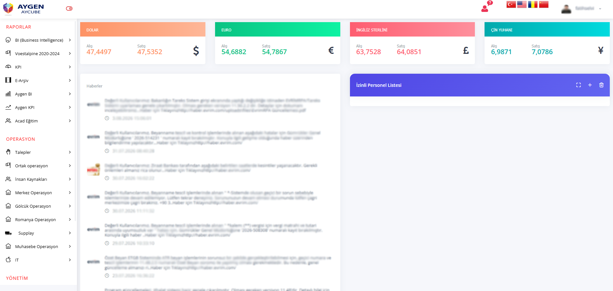
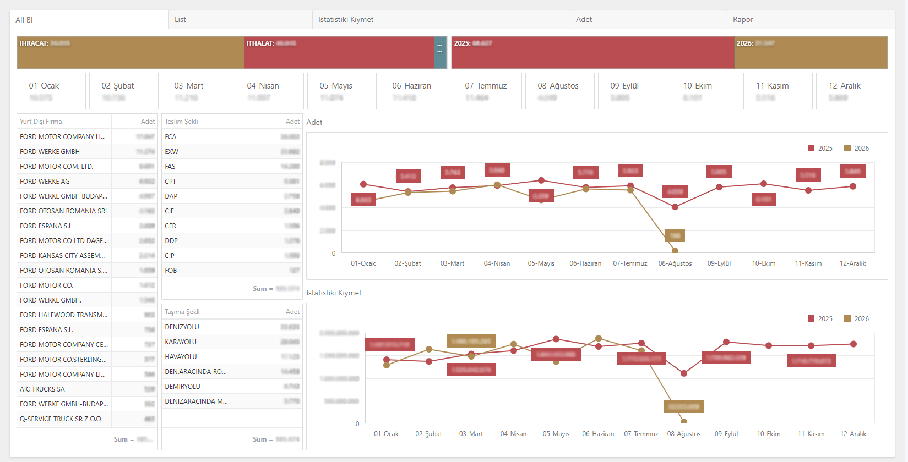

×
Ford operasyonları için tek dijital omurga.
29 proje, 37 rapor akışı ve saha operasyonlarını; entegrasyon, otomasyon ve görünürlükte birleştiren Aycube ekosistemi.
AYGEN ITFORD OTOSAN2026
01 — YÖNETİCİ AKIŞI
Değer dört eksende büyüyor.
Ekip ve iş birliğinden, platform ve otomasyona; oradan sahadaki görünür sonuca uzanan tek hikâye.
02 — IT EKİBİMİZ
Beş uzmanlık. Tek teslimat sorumluluğu.
IT ekibimizin iletişim kartları.

Senior Software DeveloperYener KARATAŞ yenerkaratas@aygen.com.tr
AI & RPA DeveloperBerk Efe TAŞ berktas@aygen.com.tr03 — İŞ BİRLİĞİ
Aynı masa.Kısa döngü.Sürdürülebilir sonuç.
İhtiyaç, analiz, geliştirme ve geri bildirim tek teslimat ritminde birleşir; Ford operasyonları için karar süresi kısalır, sahiplik netleşir.
×
01 / COLLABORATION
İş birimleriyle aynı masada
İhtiyaçlar doğrudan operasyon ekiplerinden alınır; geri bildirim, analiz, geliştirme ve teslimat döngüsü birlikte yürütülür.
04 — AYCUBE & PROJELER
29 proje, tek platform mantığıyla ölçekleniyor.
AYCUBE NEDİR?
İş akışları, entegrasyonlar ve raporlamayı tek çatı altında toplayan modüler platform.
- Otomatik bildirim ve raporlarla anlık takip
- Denetlenebilir kayıt ve uçtan uca izlenebilirlik
- Yeni iş ihtiyaçlarına uyarlanabilen modüler mimari

Aycube Ana EkranPlatform giriş noktası, menüler ve haber akışı

All BIYönetim için canlı KPI ve istatistiki özetler
29Ford projesi5yetkinlik grubu
05 — OTOMAIL
37 rapor akışı. Tek teslim ritmi.
Planlı tetikleme, standart şablon, kural bazlı alıcı listeleri, teslim logları ve hata uyarılarıyla raporlama ritmini otomatikleştirir.
OTOMAIL SERVICE
Hazır
XLSX
01Üret
02Doğrula
03Dağıt
Ford Eksik Evrak Raporu HaftalıkWeekly · Documentation · XLSX
Hazır
Detaylı İthalat RaporlarıDaily · Import · XLSX
Sırada
Ford Beyanname RaporuDaily · Customs · PDF
Sırada
Ford İhracat Raporu (0100)Daily · Export · XLSX
Sırada
Ford Ödeme RaporuEvent-based · Finance · XLSX
Sırada
06 — ENTEGRASYONLAR
Dört kritik akış, aynı veri omurgasında birleşiyor.
İthalat, ihracat, arşiv ve banka akışları; ortak veri, doğrulama ve izleme prensipleriyle yönetilir.
IMPORT INTEGRATION
İthalat Entegrasyonu
Araç ve yedek parça operasyonları; farklı veri alanları, kontrol kuralları, bütçeler ve geliştirme süreçleri nedeniyle ayrı akışlar olarak yönetilir.
İthalat Araç
Araç operasyonuna özel veri modeli, doğrulama alanları ve beyanname senaryoları.
İthalat Yedek Parça
Yedek parça operasyonuna özgü kalem, alan ve kontrol ihtiyaçları.
DATAKaynak verinin merkezi alımıKaynak sistemde sunulan alanlar
CONFIGKonfigüre edilebilir alan seçimiİhtiyaca göre istenen alanlar
DELIVERYAkış bazlı teslimatHer operasyon için ayrı kural ve kontrol
07 — RPA & OCR
Robot tekrar eder. OCR doğrular. Ekip istisnayı yönetir.
Toplu İNTAÇ sorgulama ve İNTAÇ tarihinin entegrasyonla aktarılması, TAREKS işlemlerinin RPA üzerinde yürütülmesi, Ford Fatura OCR ve fatura kontrollerinin otomatikleştirilmesi.
Toplu İNTAÇTAREKS RPAFord Fatura OCR0910 Kontrolü
AYGEN AUTOMATION LABHazır
RPA BOTPortal & INTAÇ sorgulama
→
INVOICE
OCR ENGINEAlan bazlı veri yakalama→
✓
AYCUBE / ERPDoğrulanmış veri aktarımı08:41:02Robot kuyruğu hazırREADY
08:41:04INTAÇ oturumu bekleniyorWAIT
08:41:06OCR motoru hazırREADY
08 — ÖZEL PROJELER
Özel ihtiyaç, modüler çözüme dönüşüyor.
Her çözüm gerçek bir operasyon temasına odaklanır: belge, saha güvenliği veya finansal akış.
09 — SUPALAN
Sahanın ritmi, tek ekranda görünür ve yönetilebilir.
Tır giriş-kayıt süreçleri, saha hareketleri ve bekleme süreleri Aycube üzerinden tek ekranda izlenir.
Veriler örnektir.
SaatPlakaİşlemDurum
10:4234 FOT 726Araç İthalatİşlemde
10:3641 AY 1955Yedek ParçaBekliyor
10:2834 GEN 071Araç İhracatTamamlandı
✓
Kayıt eklendiÖrnek veri güncellendi
AYGEN IT × FORD OTOSAN
Veriden aksiyona.Birlikte geleceğe.
×